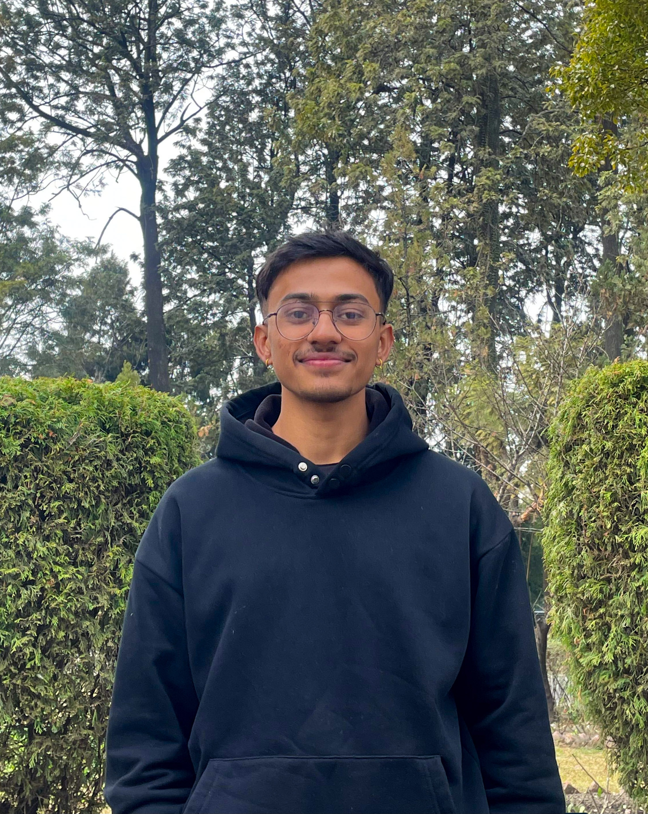
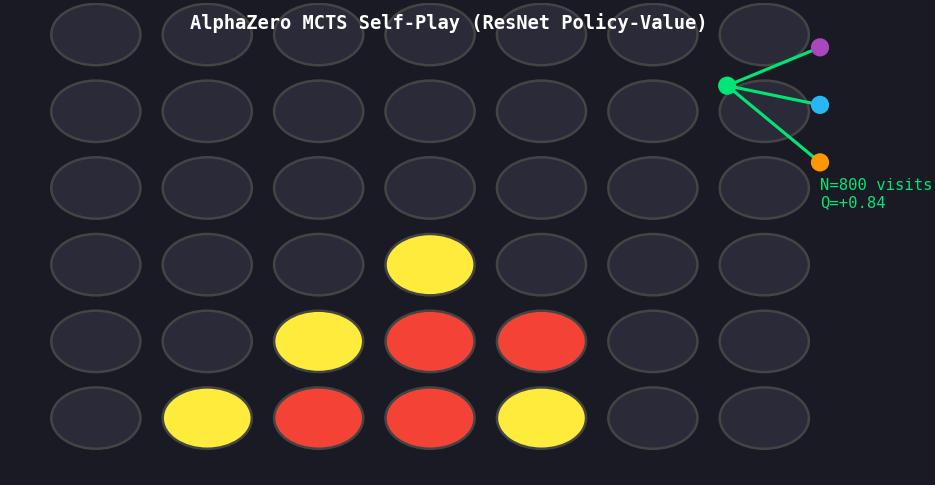
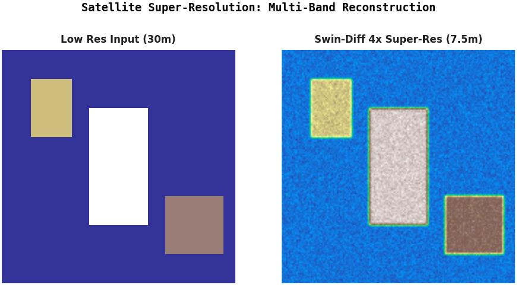
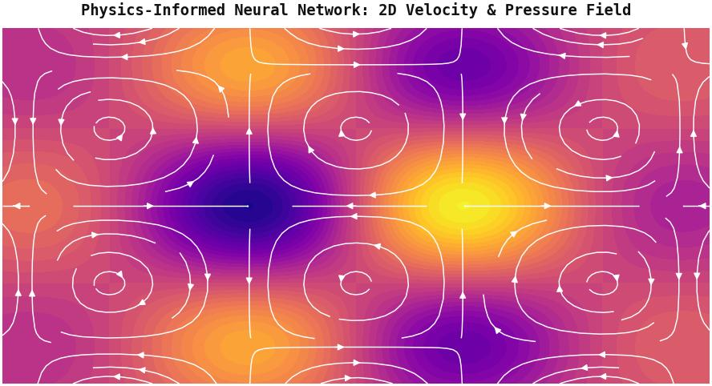
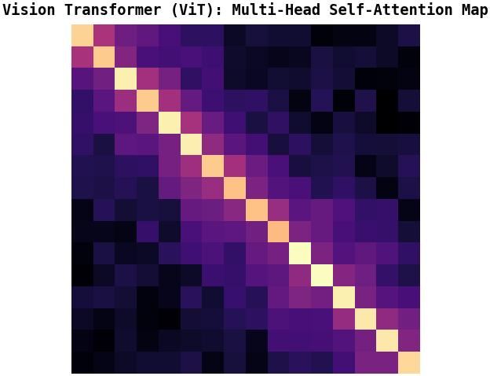

Gagan Bhusal
Robotics and Machine Learning researcher studying Electronics, Communication & Information Engineering at IOE Pulchowk Campus. Working on embodied AI and sim-to-real robot learning including locomotion, whole body motion imitation, and manipulation for quadrupeds and humanoid robots.

Selected Projects & Research
Click any project to view technical overview & demosUnitree Go2 Sim-to-Real Quadruped Locomotion
2026Trained an asymmetric actor-critic locomotion policy across 4,096 parallel environments in Genesis simulator with aggressive domain randomization. Transferred zero-shot to the physical Unitree Go2 via low-level CycloneDDS, validating stable standing, push recovery, and blind omnidirectional walking.
Unitree G1 Humanoid Motion Imitation
2026Building a whole-body motion imitation pipeline for the 23-DOF Unitree G1 humanoid robot. Converts human video into robot joint targets via GVHMR and GMR retargeting, trains an expert PPO teacher in Genesis, and distills into a robust student policy for sim-to-real transfer.
AlphaZero from Scratch for Connect-4 Agent
2025
MCTS EVALUATIONPyTorch implementation of DeepMind's AlphaZero algorithm for two-player Connect-4. Uses Monte Carlo Tree Search (MCTS), a residual policy value neural network, and self-play data generation without human domain knowledge. Outperformed depth-10 Minimax agents.
Ghost-Net: Edge AI Forest Bioacoustics
2026 MFCC SPECTROGRAM
MFCC SPECTROGRAM
Autonomous bioacoustic surveillance node for detecting illegal logging (chainsaws), gunshots, and weather patterns. Designed an ultra-compact CNN trained on MFCC audio spectrograms, quantized to INT8 with 74.6% accuracy, and deployed onto an ESP-32 microcontroller with TensorFlow Lite Micro.
Satellite Image Super-Resolution & Spatial Upscaling
2026 · Current
4X SUPER-RESOLUTIONResearch Assistant role contributing to a PhD research project on satellite imagery super-resolution and spatial upscaling. Can't disclose more
Physics-Informed Neural Networks (PINNs)
2025
2D PDE FLOW FIELDDeep learning framework for solving arbitrary non-linear ODEs and PDEs without labeled data, validated against the 1D heat equation. Includes an interactive Streamlit application supporting user-defined equations and 3D solution visualization.
Open-Source 8-DOF Quadruped Robot
2025Co-engineered an open-source 8-DOF quadruped robot. Implemented inverse kinematics on an Arduino for real time leg trajectory planning and control, and deployed a custom on-device wake-word model on an ESP-32 for voice command triggers.
English to Nepali Machine Translation with Custom Transformer
2024–2025
SELF-ATTENTION MAPBuilt an encoder-decoder Transformer from scratch in PyTorch. Hand-coded multi-head self-attention, positional embeddings, causal masking, and evaluated translation performance from English to Nepali with BLEU and chrF scoring.
Experience
Research • Engineering Roles- Developing sim-to-real legged locomotion systems for the Unitree Go2 quadruped using Mjlab and Genesis Simulator.
- Trained and deployed a robust locomotion policy zero-shot on the physical Unitree Go2, validating stable omnidirectional walking and push recovery.
- Developing deep learning architectures for spatial upscaling and super-resolution on multi-band satellite images.
- Co-developed the open-source 8-DOF Quadruped Robot, leading inverse kinematics for gait planning and control.
- Trained and quantized a custom wake-word detection model, deployed it on an ESP-32.